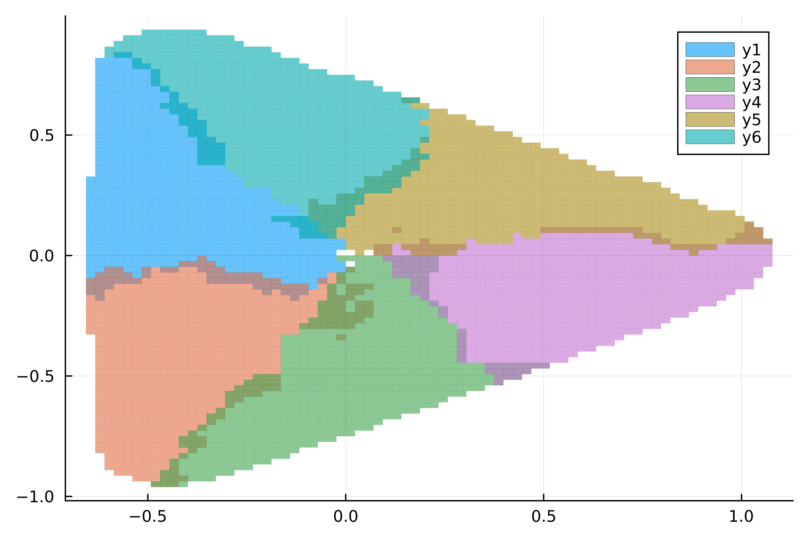

Cyclic Sets
Mathematical Background
We can extend the idea of almost invariant sets to sets which are cyclic in nature. We wish to find sets $A_0, \ldots, A_{r-1}$ such that
\[A_{k \, \text{mod} \, r} \approx f^{-1} ( A_{k+1 \, \text{mod} \, r} ) , \]
or in the context of the transfer operator, signed measures $\mu_0, \ldots, \mu_{r-1}$ with
\[f_{\#}\,\mu_{k \, \text{mod} \, r} \approx \mu_{k+1 \, \text{mod} \, r} \]
and supports on $A_0, \ldots, A_{r-1}$, respectively.
We can approximate a solution to this problem again as an eigenproblem, finding eigenmeasures $\nu_0, \ldots, \nu_{r-1}$ corresponding to the $r$-th roots of unity $\omega_r^k = e^{2 \pi k / r},\ k = 0, \ldots, r-1$. We have a theorem from [10]:
Suppose there exist sets $A_0, \ldots, A_{r-1}\, \subset Q$ with $A_{k \, \text{mod} \, r} \approx f^{-1} ( A_{k+1 \, \text{mod} \, r} )$. Then the rth power
\[(f_{\#})^r = \underbrace{f_{\#} \circ \ldots \circ f_{\#}}_{r\ \text{times}}\]
has eigenvalue $1$ with multiplicity at least $r$. Further, there are $r$ corresponding probability measures $\mu_0, \ldots, \mu_{r-1}$ with supports on $A_0, \ldots, A_{r-1}$, respectively. These $\mu_k$ can be constructed from the eigenmeasures $\nu_k$ of $f_{\#}$ corresponding to the eigenvalues $\omega_r^k$ as follows
\[\mu_{\pi(l)} = \frac{1}{r} \sum_{k = 0}^{r-1} \omega_r^{k \cdot l} \nu_k\]
where $\pi$ is some permutation of the indices $\left\{ 0, \ldots, r \right\}$.
Example
Let us consider the map $f : \mathbb{C} \to \mathbb{C}$ given by
\[f(z) = e^{-\frac{2 \pi i}{3}} \left( (|z|^2 + \alpha) z + \frac{1}{2} \bar{z}^2 \right) , \]
with $\alpha = -1.7$. To realize this in GAIO.jl, we will view $\mathbb{C} \cong \mathbb{R}^2$.
using GAIO
const α = -1.7
f(z) = exp(-2*pi*im/3) * ( (abs(z)^2 + α)*z + conj(z)^2 / 2 )
fr((x, y)) = reim( f(x + y*im) )
c, r = (0, 0), (1.5, 1.5)
Q = Box(c, r)
P = BoxGrid(Q, (128,128))
F = BoxMap(fr, Q)
S = cover(P, (0,0))
W = unstable_set(F, S)3744 - element BoxSet in 128 x 128 - element BoxGridIf we consider the recurrent set we notice that there seem to be some discrete "blobs". We may wonder how they interact.
C = recurrent_set(F, W, steps=2)5665 - element BoxSet in 256 x 256 - element BoxGridusing Plots
p = plot(C)T = TransferOperator(F, W, W)
# eigenvalues of Largest Magnitude (LM)
λ, ev = eigs(T; nev=32, which=:LM)
λ32-element Vector{ComplexF64}:
1.0000000000000053 + 0.0im
0.49999966711616073 + 0.8660253816376066im
0.49999966711616073 - 0.8660253816376066im
-0.4999999625772863 + 0.8660247898984552im
-0.4999999625772863 - 0.8660247898984552im
-0.9999992700378539 + 0.0im
0.8630061226535517 + 0.0847479723716105im
0.8630061226535517 - 0.0847479723716105im
0.5048957483412261 + 0.7050116685671846im
0.5048957483412261 - 0.7050116685671846im
⋮
-0.8110847919669453 + 0.0im
-0.3486953259390599 + 0.7055562580020118im
-0.3486953259390599 - 0.7055562580020118im
0.43669051000156756 + 0.6547478908120322im
0.43669051000156756 - 0.6547478908120322im
-0.7853702000863243 + 0.05078854956992042im
-0.7853702000863243 - 0.05078854956992042im
0.7853616536917789 + 0.050814354753988156im
0.7853616536917789 - 0.050814354753988156imp = scatter(λ)We see that the $6$th roots of unity clearly seem to be part of the spectrum. We therefore can conclude that there is an approximate 6-cycle, and can extract the sets corresponding to the cycle.
# by inspection we see that λ[1:6] are ω₆ᵏ, k = 0, ..., 5
ω = λ[1:6]
ν = ev[1:6]
# perform the sum described in the theorem
μ = [sum( 1/6 .* ω.^l .* ν ) for l in 0:5]
# grab the real components
# (they are all approximately real, but the data type is still ComplexF64)
μ = real .∘ μ
# threshhold to extract support of each μᵢ
# This depends on the result from ARPACK,
# so it might be necessary to flip the `>`
τ = eps()
A = [
BoxSet( P, Set(key for key in keys(μᵢ) if μᵢ[key] > τ) )
for μᵢ in μ
]
A6-element Vector{BoxSet{Box{2, Float64}, BoxGrid{2, Float64, Int64}, Set{Tuple{Int64, Int64}}}}:
687 - element BoxSet in 128 x 128 - element BoxGrid
710 - element BoxSet in 128 x 128 - element BoxGrid
680 - element BoxSet in 128 x 128 - element BoxGrid
690 - element BoxSet in 128 x 128 - element BoxGrid
652 - element BoxSet in 128 x 128 - element BoxGrid
670 - element BoxSet in 128 x 128 - element BoxGridp = plot();
for (i, Aᵢ) in enumerate(A)
global p;
p = plot!(p, Aᵢ, color=i, fillalpha=0.6);
end
Note that we can also approximate the cyclic sets from the measures μ using sparse eigenbasis approximation (SEBA) as described in the corresponding section of the documentation.